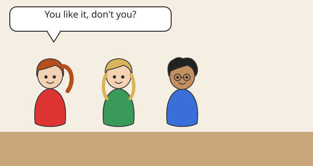
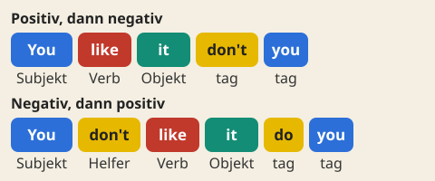
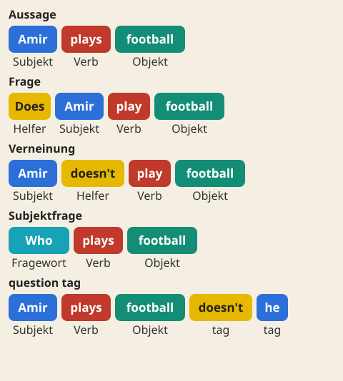

You like it, don't you?
Mit einem KI-Tutor lernen
Ein KI-Tutor erklärt dir diese Seite und hilft dir bei den Aufgaben. Wähl deinen Assistenten:
Mit Claude öffnen Mit ChatGPT öffnen Mit Mistral Vibe öffnen
Du nutzt dein eigenes Konto beim Anbieter. Der Assistent ist kein Angebot von lernapps.net: lernapps liefert nur Inhalte und Aufgaben. Die Wahl gilt für alle Seiten, nur auf diesem Gerät.
Ellie fragt nach

Von links: Ellie (roter Pferdeschwanz) spricht, daneben Sophie (Zöpfe) und Amir (Brille).
Quelle: eigene Zeichnung. Lizenz: CC-BY-4.0.Ellie zeigt Sophie ihre neue Zeichnung der Schule und sagt: „You like it, don't you?“ Sophie lächelt und nickt.
Aufgabe
Lösung
Sie möchte, dass Sophie ihr zustimmt. richtige Antwort
Der tag fragt „oder?“. Ellie glaubt, dass Sophie die Zeichnung mag, und will es hören.
Sie fragt, wo Sophie die Zeichnung gesehen hat.
Dann würde Ellie Where fragen. Ein question tag fragt nach Zustimmung.
Sie fragt, wer die Zeichnung gemacht hat.
Dann würde Ellie Who fragen. Ein question tag fragt nach Zustimmung.
Ein question tag ist eine kleine Frage am Ende. Sie heißt „oder?“ oder „nicht wahr?“ und will Zustimmung.
Das kannst du danach: Du hängst an eine Aussage einen question tag und wählst den richtigen Helfer.
Der Spiegel am Satzende
Ein question tag ist wie ein kleiner Spiegel am Ende des Satzes. Er dreht den Satz um: Aus positiv wird negativ, aus negativ wird positiv. Der Helfer kommt dabei zurück, und danach steht das Subjekt als Pronomen, also als kurzes Wort wie he, she oder they: aus Peter wird he.

Der Spiegel am Satzende dreht den Satz um: positiv, dann negativ, und umgekehrt.
Quelle: eigene Zeichnung. Lizenz: CC-BY-4.0.| Aussage | tag |
|---|---|
| You like tea. | don't you? |
| Peter plays football. | doesn't he? |
| Ellie ate pizza. | didn't she? |
| Amir is happy. | isn't he? |
| You are tired. | aren't you? |
Merke
Positiv, dann negativ. Negativ, dann positiv. Der tag nimmt den Helfer der Aussage wieder auf (do, does, did) oder bei be das Wort be. Danach steht das Pronomen: Peter wird he, Ellie wird she.
| Wort oder Ausdruck | Bedeutung |
|---|---|
| like | mögen |
| play | spielen |
| eat – ate | essen – aß |
| watch – watched | anschauen – schaute an |
| football | Fußball |
| pizza | Pizza |
| tea | Tee |
| film | Film |
| read | lesen |
| book | Buch |
| happy | froh |
| tired | müde |
| yesterday | gestern |
| lunch | Mittagessen |
| at school | in der Schule |
| question tag | kleine Frage am Satzende |
Übung
Aufgabe
Lösung
Richtige Antwort: Amir likes tea, – doesn't he?; You don't play football, – do you?; Peter and Amir play football, – don't they?; Ellie isn't tired, – is she?
Der tag nimmt den Helfer der Aussage wieder auf und dreht den Satz um. Aus positiv wird negativ, aus negativ wird positiv.
Aufgabe
Wähle den richtigen question tag.
Tipp
Schau auf den Helfer der Aussage und dreh ihn um. Aus positiv wird negativ.
- Ellie likes pizza, ... she? → Ellie likes pizza, … she?
- Peter doesn't play football, ... he? → Peter doesn't play football, … he?
- Sophie and Amir watched a film, ... they? → Sophie and Amir watched a film, … they?
- Mr Hill is happy, ... he? → Mr Hill is happy, … he?
Lösung
- Ellie likes pizza, doesn't she?
- Peter doesn't play football, does he?
- Sophie and Amir watched a film, didn't they?
- Mr Hill is happy, isn't he?
Aufgabe
Schreibe nur den question tag.
Tipp
Welcher Helfer steckt in der Aussage? Dreh ihn um und nimm das Pronomen.
- Amir plays football, ...
- You don't like pizza, ...
- Peter ate lunch, ...
- Sophie is tired, ...
Lösung
- doesn't he?
- do you?
- didn't he?
- isn't she?
Aufgabe
In jedem Satz steckt ein Fehler. Schreibe den Satz richtig.
Tipp
Prüfe, ob der tag den Satz umdreht und ob der Helfer zur Person passt.
- You watch a film, do you?
- Ellie reads a book, don't she?
Lösung
- You watch a film, don't you? (auch richtig: You don't watch a film, do you?)
- Ellie reads a book, doesn't she?
Aufgabe
Schreibe den Satz auf Englisch.
Tipp
Frag dich, welcher Helfer in der Aussage steckt, und dreh ihn um.
- Du magst Pizza, oder?
- Ellie ist müde, oder?
- Peter hat gestern Fußball gespielt, oder?
Lösung
- You like pizza, don't you?
- Ellie is tired, isn't she? (auch richtig: Ellie's tired, isn't she?)
- Peter played football yesterday, didn't he?
Aufgabe
Hör zu und schreibe, was du hörst.
- KI
- KI
- KI
Lösung
- Ellie eats pizza, doesn't she?
- You don't like tea, do you?
- Peter watched a film, didn't he?
Spiegel für eine Postkarte
Aufgabe
Hör zu, sprich nach und nimm dich auf. Vergleiche dann mit dem Original.
Tipp
Hör den Satz zuerst. Sprich dann langsam nach. Der tag klingt wie eine kleine Frage.
- Sophie is happy, isn't she?KI
- Amir plays football at school, doesn't he?KI
- You didn't eat lunch, did you?KI
Zum Aufnehmen braucht diese Aufgabe JavaScript. Die Beispiele kannst du auch ohne anhören.
Lösung
- Sophie is happy, isn't she?
- Amir plays football at school, doesn't he?
- You didn't eat lunch, did you?
Offene Aufgabe
Ellie schreibt Sätze für eine Postkarte an Sophie. Schreibe drei Sätze mit question tag, einen im simple present, einen im simple past und einen mit is oder are.
Eine gute Antwort enthält:
- In jedem Satz steht am Ende ein question tag mit Komma davor. Nachlesen
- Positive Sätze haben einen negativen tag, negative Sätze einen positiven. Nachlesen
- Der Helfer des tags passt zum Satz (do, does, did oder is, are) und danach steht ein Pronomen. Nachlesen
- Es sind ganze Sätze mit Fragezeichen am Ende. (Form)
Lösung
You like pizza, don't you? Peter played football, didn't he? Ellie is happy, isn't she?
Alles zusammen an der Satzleiste
Mr Hill hängt zum Schluss alle Karten noch einmal an die Wand. Du hast Aussage, Frage, Verneinung, Subjektfrage und question tag gesehen. Schau, welche Plätze es gibt:

Alle Plätze der Satzleiste. Der gelbe Helfer wandert: nach vorn, vor das Verb und ans Ende.
Quelle: eigene Zeichnung. Lizenz: CC-BY-4.0.Der gelbe Helfer fehlt in der Aussage, weil das simple present ihn dort nicht braucht, und bei der Subjektfrage, weil dort das Fragewort das Subjekt ersetzt. Sonst ist er in jeder Reihe, nur an verschiedenen Plätzen.